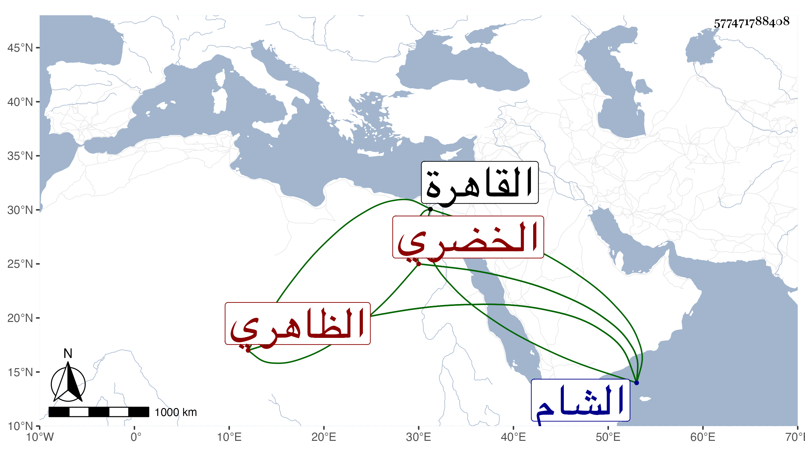

0902Sakhawi.DawLamic.ITO20230111-ara1.EIS1600.577471788408
Biography ID: 577471788408
659
أحمد بن نوروز شهاب الدين الخضري الظاهري برقوق لكون أبيه كما سيأتي من مماليكه . ولد في سنة اثنتين وثمانمائة أو التي قبلها تقريبا ونشأ يتيما ثم اتصل بالظاهر حقمق فاستقر به حين كان أمير اخرو شاد الشربخاناة فلما تملك عمله أمير عشرين بالشام وعداد الأغنام ثم ضم إليهما امرة عشرة بالقاهرة ، وأثرى وسافر إلى الشام غير مرة وتزوج زينب ابنة الجلال البلقيني وكانت تتهالك في الترامي عليه وتعرض عن ابن عمها مع مزيد ميله إليها ونقصه من الآخر إلى أن أعرض عنها البتة وآل أمره إلى أن ولي إمرة الركب الأول وأخذ في أسباب ذلك فمات في يوم الأحد رابع عشر شعبان سنة اثنتين وخمسين وكان أشقر معتدل القد يلثغ بالسين ولا يذكر بخير ولا دين .
